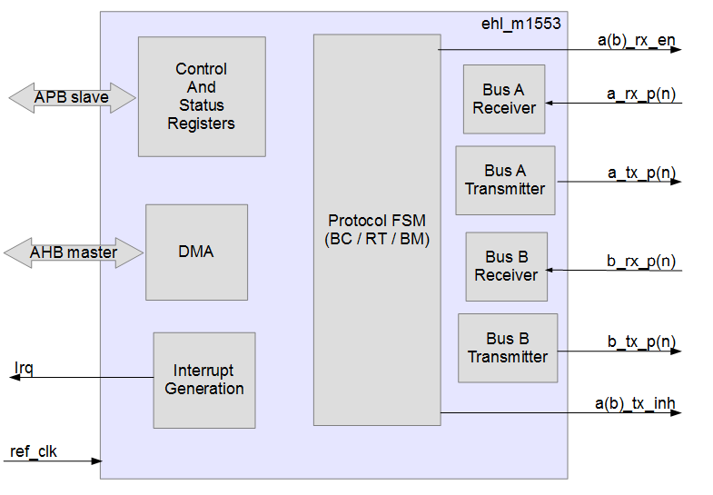

EHL_M1553 является контроллером шинного интерфейса по стандарту Mil-Std 1553B / ГОСТ-Р 52070-2003.
Контроллер имеет следующий интерфейс:
1. AMBA APB Slave для управления устройством.
2. AMBA AHB Master для доступа к данным и дескрипторам.
3. 2 канала Mil-Std 1553.
4. Прерывание.
5. Конфигурируемая опорная частота 12, 16, 20 МГц.
Интерфейсы APB и AHB имеют общую тактовую частоту и сигнал асинхронного сброса.
_____________________________
| |
---| ref_clk |
---| pclk pready |---
---| presetn pslverr |---
---| paddr prdata |---
---| pwrite |
---| psel |
---| penable |
---| pwdata |
---| hrdata haddr |---
---| hready htrans |---
---| hresp hwrite |---
| hsize |---
| hburst |---
| hprot |---
| hwdata |---
---| a_rx_p a_tx_p |---
---| a_rx_n a_tx_n |---
| a_tx_inh |---
| a_rx_en |---
---| b_rx_p b_tx_p |---
---| b_rx_n b_tx_n |---
| b_tx_inh |---
| b_rx_en |---
| irq |---
|_____________________________|
| Название | Количество | Тип | Назначение |
|---|---|---|---|
| ref_clk | 1 | I | Рабочая частота контроллера. 12, 16 или 20 МГц в соответствии с параметром REF_CLK_SPEED. |
| pclk | 1 | I | Тактовая частоты шин AHB и APB. |
| presetn | 1 | I | Асинхронный сигнал сброса контроллера. |
| paddr | 32 | I | Стандартный сигнал шины APB. |
| pwrite | 1 | I | Стандартный сигнал шины APB. |
| psel | 1 | I | Стандартный сигнал шины APB. |
| penable | 1 | I | Стандартный сигнал шины APB. |
| pwdata | 32 | I | Стандартный сигнал шины APB. |
| pready | 1 | O | Стандартный сигнал шины APB. |
| pslverr | 1 | O | Стандартный сигнал шины APB. |
| prdata | 32 | O | Стандартный сигнал шины APB. |
| haddr | 32 | O | Стандартный сигнал шины AHB. |
| htrans | 2 | O | Стандартный сигнал шины AHB. |
| hwrite | 1 | O | Стандартный сигнал шины AHB. |
| hsize | 3 | O | Стандартный сигнал шины AHB. |
| hburst | 3 | O | Стандартный сигнал шины AHB. |
| hprot | 4 | O | Стандартный сигнал шины AHB. |
| hwdata | 32 | O | Стандартный сигнал шины AHB. |
| hrdata | 32 | I | Стандартный сигнал шины AHB. |
| hready | 1 | I | Стандартный сигнал шины AHB. |
| hresp | 2 | I | Стандартный сигнал шины AHB. |
| a_tx_p | 1 | O | Выход шины A положительной полярности. |
| a_tx_n | 1 | O | Выход шины A отрицательной полярности. |
| a_tx_inh | 1 | O | Запрет работы передатчика шины A. |
| a_rx_en | 1 | O | Разрешение работы приемника шины A. |
| a_rx_p | 1 | I | Вход шины A положительной полярности. |
| a_rx_n | 1 | I | Вход шины A отрицательной полярности. |
| b_tx_p | 1 | O | Выход шины B положительной полярности. |
| b_tx_n | 1 | O | Выход шины B отрицательной полярности. |
| b_tx_inh | 1 | O | Запрет работы передатчика шины B. |
| b_rx_en | 1 | O | Разрешение работы приемника шины B. |
| b_rx_p | 1 | I | Вход шины B положительной полярности. |
| b_rx_n | 1 | I | Вход шины B отрицательной полярности. |
| irq | 1 | O | Прерывание. Активный уровень 1. |